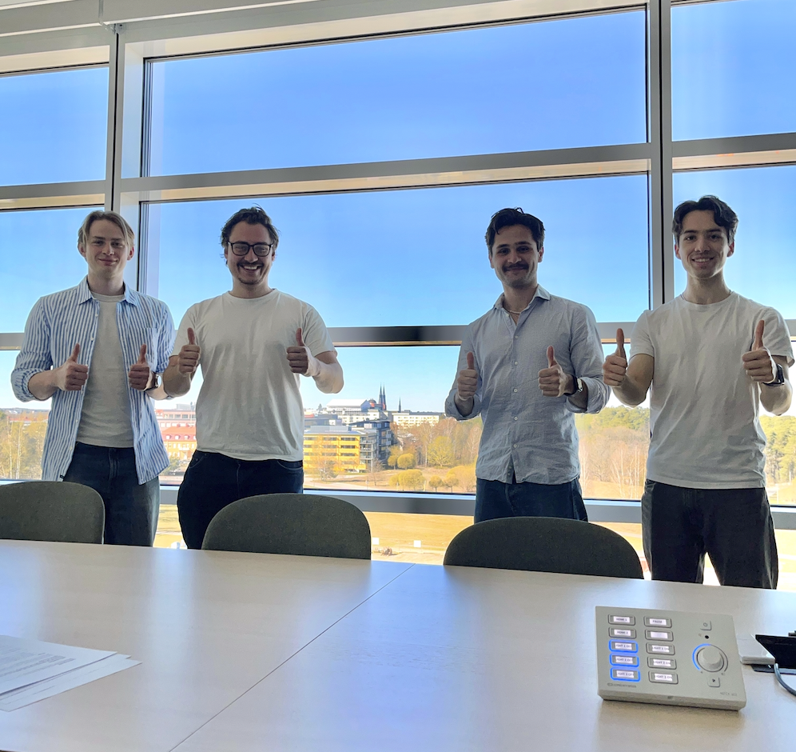

Om Batterilabbet
Batterier som möjliggör framtidens mobilitet.

Vilka är vi?
Vi vill sätta en ny standard för hur elcykelbatterier repareras i Sverige med säkerhet, transparens och korrekt hantering som grund.
Vi är fyra ingenjörsstudenter från Uppsala universitet med en bakgrund i batteribranschen som sträcker sig tillbaka till 2020 och ett stort intresse för batteriteknik, hållbarhet och smarta lösningar för att underlätta för alla med elcyklar.
Vårt mål är att hjälpa människor i hela Sverige att laga, förbättra och förlänga livet på sina batterier så att ni inte ska behöva köpa ett nytt.
Varför batterireparation?
Litiumjonbatterier har tagit världen med storm. Det är svårt att genomgå en dag i livet utan att använda ett: vi bär dem med oss i mobilen, åker elscooter, elcykel eller elbil som alla drivs av litiumjonbatterier. Då vi är så beroende av litiumjonbatterier är det viktigt att batteriet fungerar som det ska!
Batterilabbet finns här för dig om batteriet slutar att fungera. Istället för att du måste köpa nytt så reparerar och renoverar vi batteriet genom att ersätta de gamla cellerna med nya kvalitets-celler, så att det blir som nytt igen (fast bättre). Billigare och bättre än original! Dessutom kommer ditt renoverade batteri få en ordentlig skjuts i sin livslängd – bra för både din plånbok och miljön.

Varför välja oss
Vi tror inte på massproduktion utan själ. Därför byggs alla våra batteripack för hand på plats i Uppsala. För oss är säkerhet och prestanda två sidor av samma mynt.